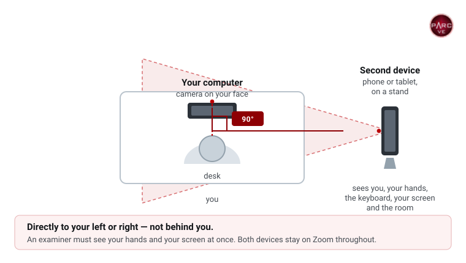

Frequently Asked Questions
Answers to what candidates ask us most, grouped by when you are likely to need them. Select a question to read the answer.
Booking and scheduling
How do I schedule an exam?
- Online exams: pick a time on the schedule. Read how online exams work first.
- In-person exams: email us to request a session, as described on the in-person testing page.
When will I receive my registration and Zoom links?
There are two emails, both from vetesting@yahoo.com. Your registration link arrives within 48 hours of booking. Registrations go out once a day, so if you booked for tomorrow, keep checking. Complete it as soon as it arrives: it is your license application (FCC Form 605), and you cannot be admitted without it. You need your FRN to complete it. Your Zoom link arrives at least 45 minutes before your exam; join on both devices 45 minutes early. Check your spam and junk folders for both.
Can I take more than one exam in a session?
- Online exams: only when arranged by email before you book. It depends on your practice scores, the time each element takes, and back-to-back slots being free that day. See two or three exams in one sitting.
- In-person exams: Yes, provided you do not take too long on the first exam and/or you request multiple exams in advance from the exam team.
My exam session time has passed, and I am still in the waiting room, what should I do?
Be patient, if you are in the waiting room, that means you have received a link and are on the schedule. Some people take longer than others and can cause the online sessions to run behind. Rest assured that you will be brought into the exam session as quickly as the exam team can get you in. Watch the “chat” in Zoom for messages, and use the time to review our website or study. Devices must show your name and “computer” or “phone”: a device the team cannot identify is not admitted until everyone else has been tested, if at all.
I cannot find a time that works for me. What should I do?
New times open up regularly, so check the schedule again over the next few days. If you still cannot find one, email vetesting@yahoo.com with the dates you are available, and whether you prefer morning, afternoon or evening.
Is there a time limit for the exam?
- Online exams: There is no strict time limit, though we record how long exams take. Most well-prepared candidates finish in about 10 minutes; allow 15 for the exam itself. If you have missed more than 25% of the questions and it is clear from the time taken that you are unprepared, we reserve the right to end the exam.
- In-person exams: Yes, most exam teams are at an exam session for up to one hour. Anything beyond that should be requested of the exam team in advance. Since the Exam Team members are volunteers, it may not be possible to have enough VEs available beyond the one-hour time frame. This will vary by exam session.
What happens if I miss my exam time slot?
Please respect the time of the volunteer examiners along with any candidates that are waiting to take their exam after you. If you need to reschedule, please email us as soon as possible so that someone else may be able to take that slot. If you fail to show or do not email at least 24 hours in advance, your session will be marked as a no-show.
Paying for your exam
What payment methods do you accept?
- Online exams: the $15 fee is taken when you book your time slot on the schedule page. Card and debit are both accepted there. There is no separate payment step, and nothing to send us afterwards. Use the same email address for booking, payment and registration, or your session may not be matched to your payment.
- In-person exams: payment is taken at the session. See in-person testing for what to bring. PayPal is only used for donations, never for exam fees. More detail on how payment works.
I paid for my exam, but I got a non-payment notice by email, what should I do?
Either the card payment did not go through or the name and email on the payment do not match your name or email on your exam application/registration. You will need to request an invoice and we will include your name in the subject line.
What are donations for?
Donations are never required, and they have nothing to do with booking an exam. They pay for equipment, radio classes, internet service, subscriptions, power and training, including the infrastructure behind online exams. Neither club receives money from a school or other group: everything comes from members and others in the ham community. Every gift is appreciated. Support PARC.
Identification and registration
Will you give an online exam to a person who is not a citizen of the USA?
Yes. Citizenship is not a requirement, but you need a physical, unexpired US photo ID: a state-issued driver’s license or photo ID card showing your current residential address, or a US passport. Passports from other countries are not accepted for online exams. Check acceptable identification, including the options for under-18s, and do not book until you have the right ID: without it the exam cannot go ahead, and the fee is not refunded.
Do I have to have an FRN?
Online Exam: Yes! The FRN is required for all exams. The FRN is a federal number that is issued by the FCC and requires you to verify your identity. You cannot use a Restricted Use FRN to take an exam.
An FRN beginning with the digits 213 (and some others) is a Restricted Use FRN which cannot be used for an application in the Amateur Radio Service. A Restricted Use FRN can ONLY be used on an FCC Form 2100, Schedule 323-E (Ownership Report for Noncommercial Broadcast Stations).
If an applicant attempts to use a Restricted Use FRN the session will be terminated and the exam will be canceled as a fail to provide a valid FRN.
The applicant MUST obtain a normal FRN before they can schedule another exam and apply for an amateur radio license.
Do I need my PIN for the exam?
No. The exam team only needs to see your photo ID, and the Exam Manager gives you the code you enter to open the exam.
How many forms of ID do I need for the exam?
One, if you are an adult: a physical state-issued driver’s license, state-issued photo ID card, or US passport. Candidates under 18 have other options. See acceptable identification for the full list.
Equipment and setup
Do I need two devices with cameras to take an exam online?
Yes! You must have two separate devices with working cameras and the Zoom application installed and running for the entire exam session.
Device Requirements:
- Primary Device (Computer – Desktop or Laptop)
- Must have a working camera.
- Must be positioned so that the camera provides a clear, unobstructed view of your face, as seen from your computer screen.
- This device is used for the Zoom meeting and the exam.
- Secondary Device (Phone, Tablet, or Second Computer)
- Needs its own working camera.
- Must be positioned exactly 90 degrees to your left or right.
- The camera must show a clear, continuous view of your entire workspace, including your face, hands, keyboard, computer screen, and surrounding area for the full duration of the exam.
- Both devices must remain connected to Zoom for the entire exam.
- The exam team has sole discretion to determine if your camera setup meets requirements.
- If you fail to meet these requirements, you will not be allowed to test and must find an in-person exam session instead.
IMPORTANT: Failure to properly set up your devices or follow any exam instructions will result in the forfeiture of your exam session fee, and you will not be eligible for a refund.
No exceptions – two devices with working cameras and Zoom are required!

Can I use an iPad, tablet or Chromebook as my exam computer?
- Online exams: No, we require a camera view of your face for the duration of the exam. These devices typically shut off the camera when sharing the screen and that is not acceptable. You must use a laptop or desktop that has a camera in the center of the screen looking at your face as well as the second camera device to the side.
- In-person exams: Yes, as long as it can be determined there is no assistive software on the device, you may be permitted to use your device at the exam. This is at the discretion of the exam team.
I cannot figure out how to rename my devices, what should I do?
You cannot rename a device once it is in the waiting room, so name each one as you join. Sign out of the Zoom app on both devices first; if you stay signed in, Zoom uses your account name and does not ask. Then open the Zoom link from your email on each device and, when asked, type your first and last name followed by “computer” or “phone”, for example “Jane Doe computer”. You must use the Zoom app; Zoom in a browser will not work. See the picture.
I have never used Zoom; do I have to download Zoom to my devices?
Yes! The Zoom app must be downloaded and run. You cannot run Zoom from a browser/website for the exam.
Can I use a mouse or external keyboard?
No! You will not need them, and they are not allowed. To navigate the exam, you will use the keys A, B, C, and D on your keyboard to select the correct answer on the question. This will not only answer the question, it will automatically advance to the next question and light it up for you to answer. The question will be bottom justified to make sure you can see any schematics which would appear above the question. The small amount of adjustments is easily done using a trackpad. If you are using a PC, of course you can use the mouse for that portion of setting up your exam.
How do I test my Zoom settings?
You will need to download the Zoom application and set up your profile. Then test your video and audio using these procedures at this website: Testing Procedures After making sure your audio and video settings are correct and working, go to Zoom Test to test your equipment in Zoom using this link: Zoom Testing
What applications are allowed on my computer?
To ensure exam integrity, all non-essential running applications must be closed. These include but are not limited to Mail, Messaging, Alerts, Teams, TeamViewer, Discord, Steam, VNC, Remote Desktops, VPNs, etc. The exam team will check your device for the presence of these running applications. You can eliminate most of this by looking at your task bar for any dots (Apple products) or lines (PC products) under any applications. That means they are running. You should also check the (^) in the task bar and quit, close, end, or exit everything that is not necessary to run your computer. Kindly follow their short instructional queries as they help you prepare your computer. During the exam, only Zoom and the exam, in a single browser tab, may be open. Use the calculator built into ExamTools rather than a calculator app.
Do I need to remove any wearable technology?
Yes. Take off headsets, earbuds, headphones, smart watches and smart glasses before you join Zoom, and put them out of reach. You also cannot wear hats, wristbands or anything else that could hide your face or an exam aid, such as a bandana or scarf.
I have a multi-screen set up for my computer, can I use this set up?
You can only have one monitor operational in the room. If you are using a laptop, it cannot be docked to any other device. Please remove, turn around, or cover additional screens or monitors in the area. A simple shirt, blanket or towel works great for covering screens. During your exam, please concentrate on your exam, trying not to allow your vision or gaze to drift away from your own testing screen.
A very handy place to test uninterrupted is in your bathroom! A smaller area, with minimal electronic distractions and the door can be locked, works nicely for your exam environment.
During your exam
Can I find out which questions I missed?
- Online exams: No, we do not have this information available to candidates.
- In-person exams: No, it is against the rules for us to disclose any information other than the number you missed on your exam.
Will my exam and area be recorded?
Yes. When joining your meeting you are asked to consent with recording laws. You understand and agree that you have covered or removed anything that you do not wish to be recorded during the exam or room scan. Please remove any sensitive material from your test area that you do not wish to be recorded. A 360-degree scan of your room is needed along with a view of your work surface/desktop where you are testing. You agree to the recording, storage and distribution of video, images, and audio from the meeting. Recordings are kept for up to 30 days, in case of any question about the exam protocol.
We do not post anything about candidates publicly without their permission. If you would like to share how your exam went, leave a review.
After your exam
When will I receive my CSCE?
- Online exams: Within 48 hours by email.
- In-person exams: At the time of successful completion of an exam element.
When will my call sign be issued by the FCC?
We file electronically, so an upgrade, or a new license once the FCC’s $35 fee is paid, can be granted the same day during FCC business hours. It depends on FCC systems, and it usually takes up to 5–7 business days; backlogs can make it longer. Please wait ten business days before asking us or the FCC. See what happens next.
I passed my exam, do I get a temporary license?
No. Your CSCE shows what you passed, but you cannot operate until the FCC grants your license and it appears in the FCC database. For a new license, that happens after you pay the FCC’s $35 application fee.
I passed my exam, is there anything else I have to do?
The FCC now collects $35 for new amateur radio licenses. The fee was mandated by Congress and went into effect April 19, 2022. After you pass your first exam, the Volunteer Examiner Coordinator will submit your information to the FCC for processing. Once the FCC processes your application, you will receive a bill via email to pay the $35 online. The $35 must be paid within 10 days or your application will be dismissed, so be sure to check your spam folder, too!
Currently there is no charge for address changes or upgrades. ALL OTHER SUBMISSIONS REQUIRE A $35.00 FEE!
Accessibility and accommodations
I have special needs; can you provide a verbal exam?
- Online exams: Yes, a VE specified by the Exam Team can read the questions off of video a maximum of two times per question.
- In-person exams: Yes, a VE selected by the Exam Team can read you the questions and answers.
Can someone I know read the exam to me?
NO! This is absolutely prohibited. No one may be present during your exam that is not a VE or taking an exam. EXCEPTION: children under 13 may have one parent observe at a distance.
I cannot use an on-screen calculator. I have special needs that prevent me from doing so. Can I use scrap paper or a manual calculator?
- Online exams: No. Scrap paper and calculators other than the one built into ExamTools are not allowed. If you cannot use it, an in-person exam may suit you better; email us and we will talk it through. See accommodations.
- In-person exams: You may bring a basic calculator with no memory or programmable functions. Scratch work goes on the back of the answer sheet.
I need accommodations to take my exam, how can I arrange accommodations?
- Online exams: Email us before you book with a description of your disability and the assistance you need. An examiner can read the questions aloud, for example. Other adjustments depend on what can be done while still meeting the online exam requirements, and some candidates are better served at an in-person session. See accommodations.
- In-person exams: Reasonable accommodations can usually be provided with restrictions based on the location of the exam and at the sole discretion of the exam team. All VEs are volunteers and are under no obligation or requirement to provide any exam that they are uncomfortable or unwilling to perform.
Help with the cost
I am 17 or under. Is there any program to help me pay for my amateur radio license?
We are an officially recognized Testing Team for the ARRL VEC. If you test with us, you may be eligible for the ARRL Youth Licensing Grant Program. In effect since April 19, 2022, this program covers the one-time $35 application fee for new amateur radio license candidates younger than 18 years old who take tests administered under the ARRL Volunteer Examiner Coordinator (VEC) program.
This program is funded by a special initiative that may be restricted or discontinued at any time. However, until any changes take effect, eligible youth who meet the requirements will receive reimbursement. You are not eligible if you did not test with the ARRL VEC or if you are over 17 years of age. After your exam, you will receive an email with a link to claim the reimbursement. ARRL Youth Licensing Grant Program Information
I had a license in the past. What do I need to do to reinstate my license?
If within 728 days of expiration, you can go online to the FCC website and renew it or we can do it for a fee. If it is beyond this time period, you will need to email an expired official copy of your license or a copy of the official callbook page showing proof of your license prior to 1984 and then schedule, take, and pass the Technician class exam and be sure to inform the exam team before the exam starts that you had an expired license, proof was emailed, and you would like “General, Advanced, or Amateur Extra class” privileges restored. We cannot process this after the exam without you scheduling another exam.
Still stuck?
If something is not working, common problems and fixes covers what goes wrong most often.
Our examiners are volunteers, not employees, so we cannot answer instantly. Email vetesting@yahoo.com and please allow up to 24 hours, excluding holidays.
Please wait ten business days before asking us or the FCC about your license status — that is how long the normal process takes, and asking sooner will not speed it up.
Some of our retired members also answer questions in the PARC Facebook group.